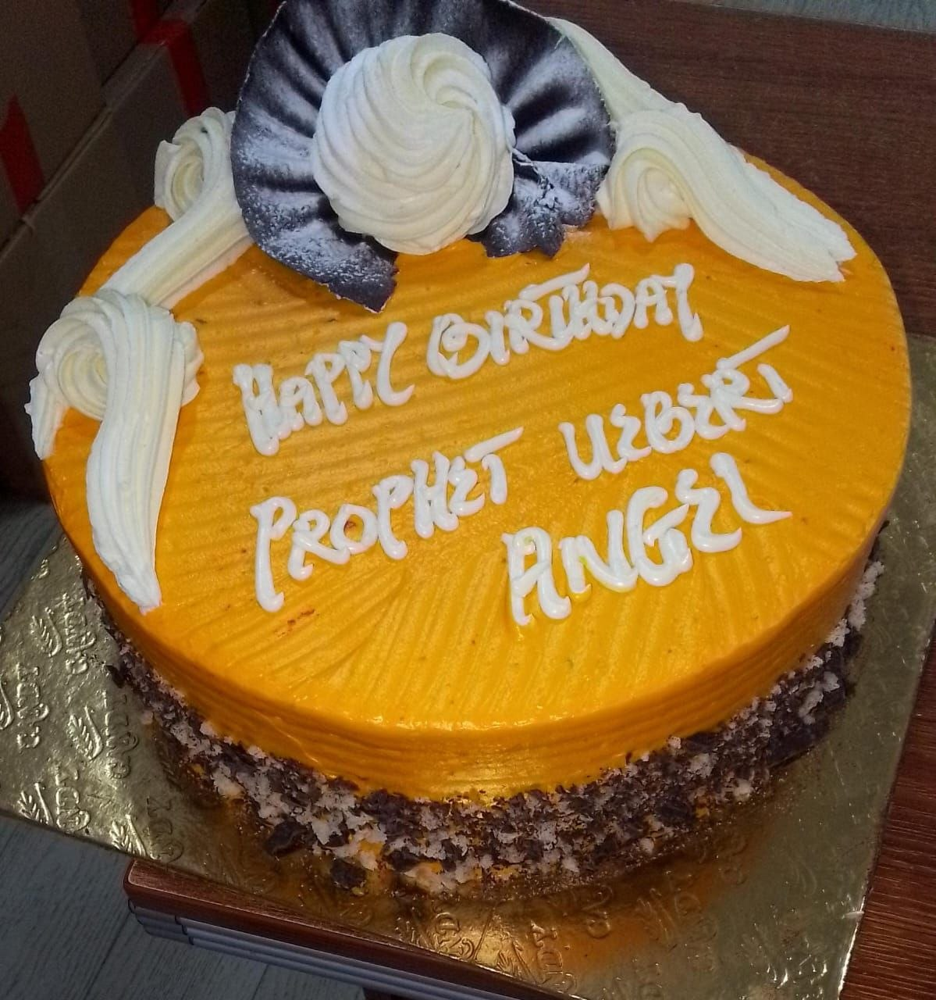
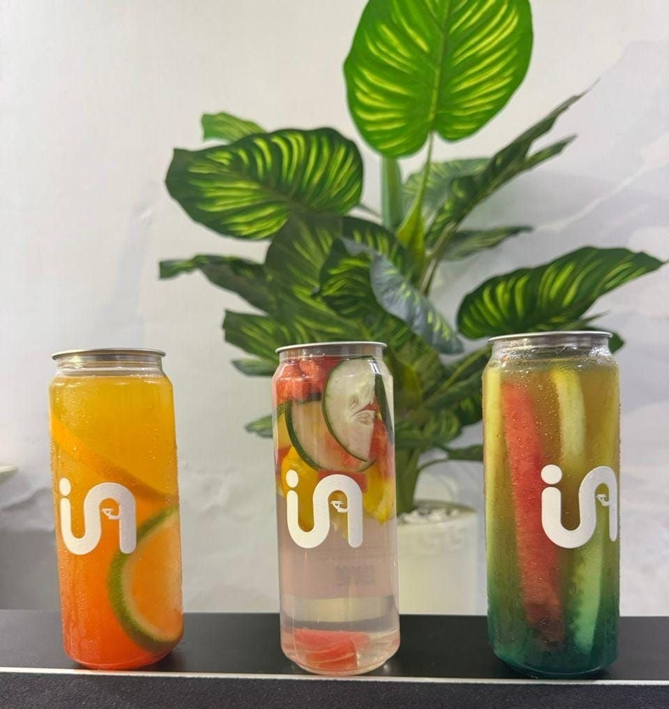
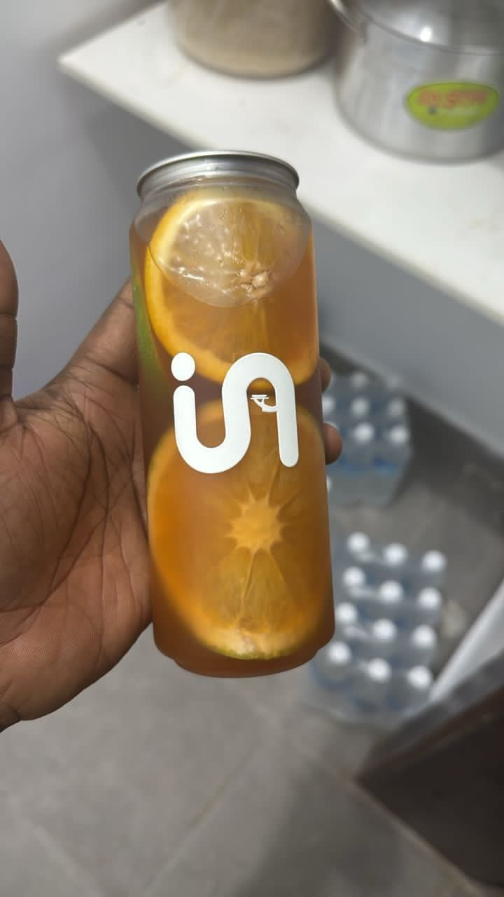

OUR VISION
To build a sustainable food ecosystem that uplifts communities—where every meal purchased helps provide nourishment, dignity, and hope to the less privileged.
U Angel Foods
An Initiative of Ecclesia Nation
U Are An Angel
To build a sustainable food ecosystem that uplifts communities—where every meal purchased helps provide nourishment, dignity, and hope to the less privileged.
To serve high-quality food and beverages to the public while using the proceeds to fund our outreach programs that feed and care for those in need: not by relying on donations, but through excellence in business.
03
U Angel Foods is a social enterprise founded by Ecclesia Nation with the goal of transforming lives.
As a social enterprise, we operate at the intersection of for-profit and non-profit organisations. Our mission is simple: to build a profitable business whose profits are channelled towards caring for the less privileged, supporting outreaches, establishing soup kitchens, and creating employment opportunities for GOD’s people.



04
We are committed to solving real problems—not with handouts, but with a sustainable, empowering approach. Here’s how it works:
05
WE DON'T WANT TO BUILD A CAMPAIGN. WE WANT TO BUILD A SYSTEM.
U Angel Foods is built on the foundation of:
Expanding food outlets and retail distribution
Feeding and supporting verified individuals in need
Empowering communities through meaningful employment
Farming for supply chain control and cost efficiency
06
To reduce reliance on external supply, to ensure cost control, to ensure quality control, and sustainability, we plan to invest in agriculture by:
This strategy ensures that we keep production costs low, maintain quality standards, and stay in full control of the supply chain—from farm to fork.
07
Nutritious meals for the less privileged through our outreach programs
Empowered communities through jobs and local partnerships
Restored dignity through a personalised approach to social care
Affordable, high-quality food for the general public
A replicable model for community transformation without dependence on donations
Supporting ministries and strengthening The Body of CHRIST
08
One day, we want to look back and know that this name represented millions—perhaps billions—of moments where someone's dignity was restored.
At U Angel Foods, our name carries a story of honour, gratitude, and spiritual heritage.
The name U Angel Foods was inspired by THE HOLY SPIRIT and given in honour of our spiritual father, the highly esteemed Prophet Uebert Angel, a bondservant of GOD who has inspired countless people around the world through his life, ministry and commitment to the advancement of the Kingdom of GOD.
We recognise Prophet Uebert Angel, The Ra’ah, as a prophet of our time and the “Major Prophet” of this last dispensation. It is our privilege to have a brand whose name serves as a lasting expression of our honour and appreciation for his life and ministry.
Prophet Uebert Angel has dedicated his life to preaching the Gospel of our LORD JESUS, teaching the WORD of GOD, raising believers, and demonstrating the compassion of CHRIST to people across nations.
His ministry has consistently emphasised not only the preaching of the Gospel but also the practical expression of GOD’s love: reaching people in their places of need, restoring dignity, and demonstrating that the Kingdom of GOD must bring tangible transformation to humanity.
Together with his beloved wife, Prophetess Bebe Angel, he has demonstrated a profound commitment to humanitarian work and to feeding and supporting less-privileged people around the world.
It is this expression of the Gospel—faith accompanied by love, compassion, action, and responsibility—that deeply resonates with the vision behind U Angel Foods.
U Angel Foods is more than a food company. Our name is a tribute. It is our way of saying that we honour a man whom we esteem greatly for his service to GOD and his commitment to the advancement of GOD’s Kingdom. The name reminds us that what we build must carry a purpose greater than ourselves.
Every meal we prepare, every customer we serve, every person we employ, and every life we are able to touch is an opportunity to demonstrate the love of CHRIST in a practical way.
We therefore chose the name U Angel Foods because we desire the legacy associated with that name to continually remind us of service, generosity, compassion, excellence, and Kingdom impact.
The vision of U Angel Foods is rooted in a simple conviction:
“Business can become a vehicle for Kingdom impact.”
Rather than building a company solely for profit, we desire to build a sustainable social enterprise whose success creates opportunities to feed the hungry, support evangelism, create employment, and establish sustainable systems for helping people in need.
Our aspiration is to demonstrate that compassion does not have to depend entirely upon occasional generosity. Sustainable businesses can be built to produce sustainable solutions.
In this way, every person who patronises U Angel Foods becomes part of something greater than a transaction.
Every time we say U Angel Foods, we are reminded that we have attached a name we deeply honour to a business with a serious responsibility.
That means the name must represent more than commercial success.
It must represent excellence, compassion, generosity, service, dignity, and Kingdom purpose. We want the name to challenge us to build differently.
And to remember that behind every social-impact statistic is a real human being created in the image of GOD.
We honour Prophet Uebert Angel and Prophetess Bebe Angel for their commitment to the Gospel and their demonstrated concern for people who are less privileged.
We are grateful for the spiritual heritage and example that have inspired us to think beyond ourselves and to build with Kingdom purpose.
May the name U Angel Foods always represent what we believe the Gospel should produce in us:
And a life that brings glory to JESUS CHRIST.
Built by Ecclesia Nation
Named in honour of Prophet Uebert Angel.